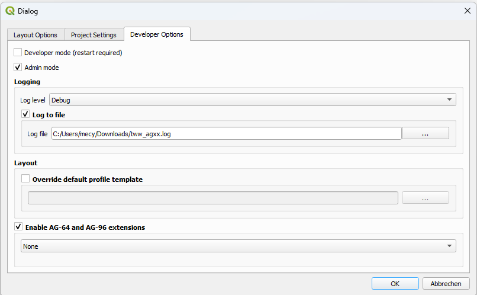
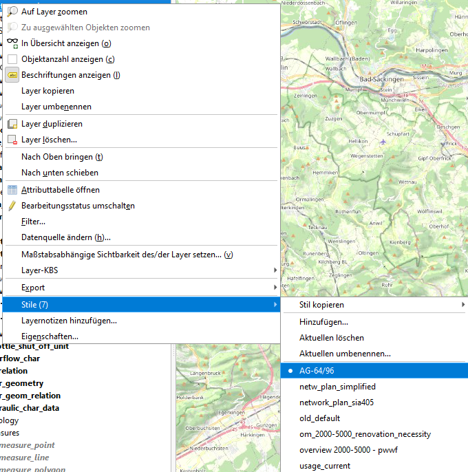

Um die Erweiterung AG-64/AG-96 nutzen zu können, muss die Datenbank entsprechend initialisiert werden. Für weitere Erläuterungen siehe initialize-extensions.
AG-64/AG-96 Interlis Import and Export einschalten
Im Plugin ist eine Funktionalität versteckt, die es erlaubt, AG-64/AG-96 INTERLIS-Daten zu importieren und exportieren. Um sie zu aktivieren, müssen zunächst die TWW-Einstellungen geöffnet werden.
Im Tab Entwickleroptionen gibt es eine Checkbox, um die AG-64/96-Erweiterung einzuschalten

Wenn diese Checkbox eingeschaltet ist, sind die DatenmodelleAG-64/AG-96 im INTERLIS-Export verfügbar.
AG-64 und AG-96 haben das Attribut Letzte_Aenderung weiter unterteilt. Im Tab Entwickleroptionen der Plugineinstellungen ist eine Combobox, die es erlaubt zu steuern, welche Letzte_Aenderung(en) aktualisiert werden sollen.
In der Datenbank wird der Wert pro Benutzer gespeichert. Beim Start wird dieser Wert geladen, damit die Einstellung nicht bei jedem Öffnen des Projekts gesetzt werden muss.
Die Attributformulare von AG-64/AG-96 sind in einem spezifischen Layerstil des Template .qgs-Projekts gespeichert. . Um auf sie zuzugreifen, klicken Sie mit rechts auf den Layer, Wählen Sie „Stile“ und wählen Sie „AG-64/96“

Von dort können Sie die Formulare bei Bedarf kopieren und einfügen.